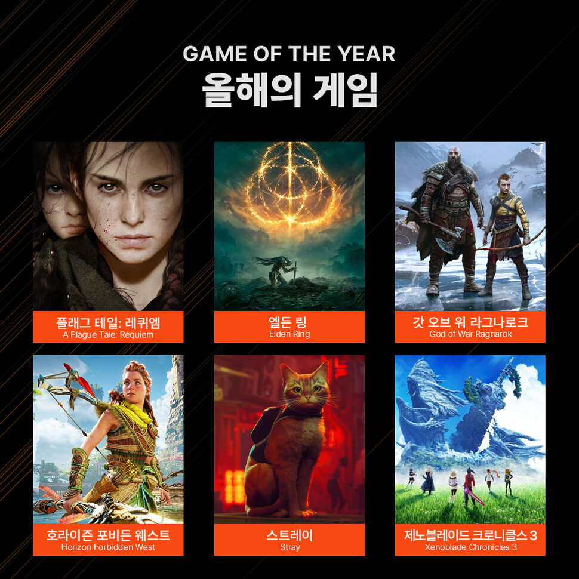

GOTY는 Game of the Year의 약자로, 의역하면
을 의미하는데,
이는 한 해 동안 발매된 수많은 게임 중 가장 높게 평가받은 작품에 주어지는 상이다.
GOTY는 다양한 평가 기준을 갖고 있는데, 보통
완성도
창의성
그래픽
사운드
몰입감
기술적 성취
등을 종합적으로 평가하여 선정된다.
 후보작 갈무리
단순한 인기 투표 이상의 의미를 가지며, 게임 산업 전반에서 뛰어난 예술성과 혁신성을 인정받는 상징적인 지위에 해당한다.
다양한 곳에서 GOTY를 시상하는데, 대표적인 GOTY 시상식으로는
The Game Awards
Golden Joystick Awards
GameSpot
등의 매체 또는 기관이 있으며, 각각 독자적인 평가 기준을 통해 수상작을 결정한다.
특히 The Game Awards는 현재 전 세계적으로 가장 영향력 있는 공식 시상식으로 꼽히며, 매년 12월경 진행된다.
GOTY를 수상한 게임은 대중들에게 게임 역사 속 명작으로 회자되는 경우가 많다.
예를 들어 2022년에는 엘든 링,
2023년에는 발더스 게이트 3가 GOTY를 수상하며 대중적 인기와 예술적 호평을 모두 얻었다.
한편 인터넷 커뮤니티나 게이머들 사이에서는 비공식적으로 “이건 고티감이다”라는 표현을 사용하기도 하는데,
이는 게이머들에게 큰 감동과 인상을 남긴 작품에 대한 존경과 찬사의 의미라 할 수 있다.